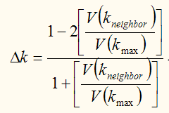
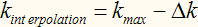
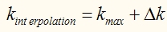
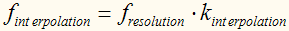
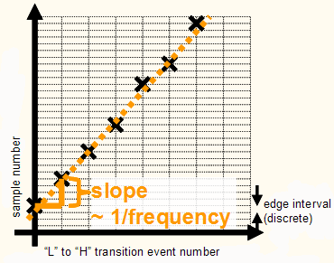
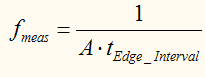

Frequency_byDigitalCapture
This test method measures frequency by digital capture on designated pins of the DUT. The test method can be used to measure the frequency of synchronous or asynchronous outputs of a device.
The test method performs a digital capture test on the desired pins specified in a vector variable (see Using Digital Capture for details of performing a digital capture test). Then it analyzes the digital capture data to determine the frequency.
Algorithms to calculate the frequency
Two algorithms are provided to calculate the frequency:
- FFT (Tabei-Ueda Interpolation)
In this algorithm, an FFT is done and the interpolation algorithm is applied to the FFT frequency data array. It takes the maximum peak bin and its immediate neighboring bins into account to interpolate the real frequency. It assumes the real frequency lies between the bins Kmax and Kneighbor. Kmax is the maximum peak bin number and Kneighbor is its highest direct neighbor. Assuming V(Kmax) and V(Kneighbor) being the respective bin values of Kmax and Kneighbor (the unit is V, no logarithmic scale), the offset of the real frequency from the maximum bin Kmax is calculated as,

If Kmax>Kneighbor , then

If Kneighbor>Kmax , then

The interpolated frequency can be calculated by multiplying the interpolated index with the frequency resolution of the FFT,

- Linear Regression Fit
In this algorithm the positions of Low-to-High transitions in the captured data array is plotted. The regression line can be obtained from the plot. For the actual calculation of the regression line, the DSP_REG() API can provide the regression coefficient and regression offset.

The slope of the regression line above corresponds to the period. The frequency can be calculated by

As this method utilizes the least square calculation to obtain the regression line, the deviation of the interval between transitions must follow Gaussian distribution. If the deviation does not follow Gaussian distribution, the FFT method is recommended.
You can choose to use FFT (Tabei-Ueda Interpolation) or Linear Regression Fit algorithm to calculate the frequency.
Cons and Pros
The FFT algorithm has a low noise sensitivity because it only uses the max bin and its neighboring bins of the signal spectrum. But this algorithm needs clear max bin in spectrum because it use the max bin and its neighbor to calculate the frequency.
Linear Regression Fit is well suited for duty cycle distortion or effects that create a spur higher than the fundamental. But it is sensitive to noise due to the use of high bandwidth comparators. (Duty cycle distortion is the difference in the mean pulse width of "1" pulses compared to the mean pulse width of "0" pulses in a clock like bit sequence.)
This test method supports test table. But you need to enter the test names manually in the parameter. You can use both test table and testflow limits in a testflow. The test table has higher priority than testflow limits. If a test name used in the test flow is defined in both test table and testflow limits, the value defined in the test table will be used.
Parameters |
Type |
Decription |
|---|---|---|
vectorVariableName |
string |
The vector variable name to perform digital capture. |
algorithm |
string |
FFT or LinearFit. Default is FFT. |
samplePeriod
|
SpecValue |
Digital capture sample period on the pins to be measured. The sample period is the time span between two consecutive capture actions. It depends on the tester period and the number of capture actions executed by the waveform. This parameter is used to evaluate the frequency in both FFT and LinearFit algorithms. (For details, see the source file ClassACTestUtil.h in the directory /opt/hp93000/soc/TestMethod/AC_TML/.) |
targetFrequency |
SpecValue |
The target frequency. It is used in undersampling. Default value is 0. It is in the format of value[unit]. Default value is 0[MHz]. |
output |
string |
Controls how to output the per pin test result. It can be:
ShowFailOnly: Only outputs the failed pin result to the report window. |
testName |
string |
The test names to be used as limits. Default is passFrequency_MHz. If you want to use the test names defined in the test table or testflow limits, type in the test names manually. Make sure the test names are in the Test name column of the test table (Refer to Structure of a TMLimits CSV file) or in the Test Name column of Tests page of Flow Data Editor. |
Limit
passFrequency_MHz |
The pass range of the measured frequency. |
Implementation pseudo code
IF not already connected THEN connect DUT ENDIF do a digital capture test retrieve the vector data for each measured pin IF algorithm FFT THEN calculate the frequency with Tabei-Ueda interpolation ELSEIF LinearFit calculate the frequency with linear regression fit ENDIF datalog the test results
Functional changes
- Introduced before SmarTest 6.3.2
- SmarTest 6.5.2: Remove "_unit" from the parameter names in UTM library.
- SmarTest 6.5.2: Change the parameter type of samplePeriod and targetFrequency to SpecValue in UTM library.
- SmarTest 7.0.3: Classic test method library is removed.
- SmarTest 7.0.3: New parameter testName.
- SmarTest 7.0.3: Test table is supported.
- SmarTest 7.1.1: Mixed usage of test table and testflow limits in one testflow is supported in TML 2.1.1.
- SmarTest 7.2.1: New option ShowFailOnly for the parameter output in TML 2.2.0.